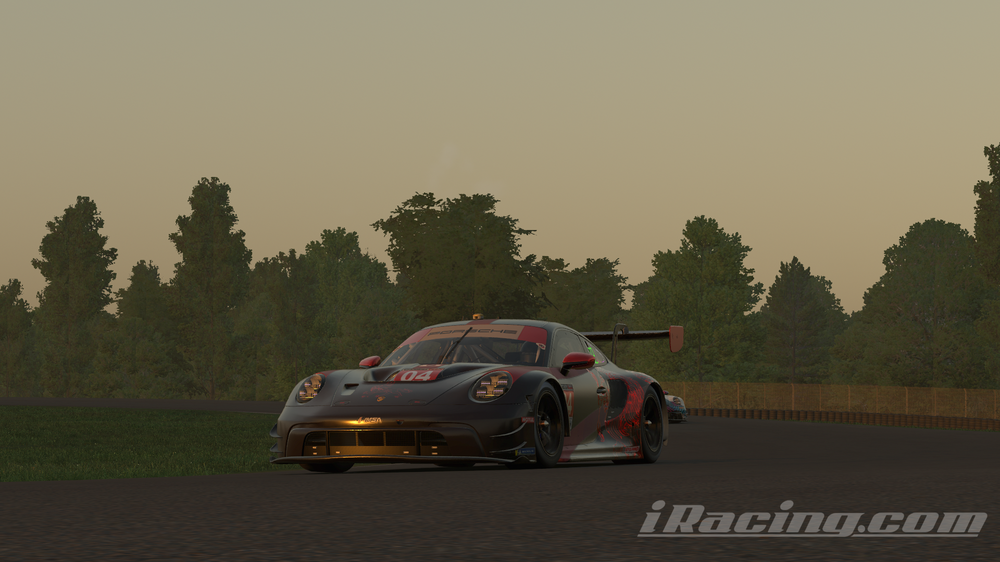

Què es Chimera Racing team?
Chimera Racing Team és un equip virtual de competició al món del simracing, es a dir, competeix a carreres virtuals organitzades a simuladors de cotxes, com Assetto Corsa Competizione o iRacing.
Perquè es va crear?
Es va crear inicialment com un equip no oficial, només per tenir una manera de competir a events fets
per
equips, concretament és va crear per competir a les 24 Hores de Nordschleife, i no estava pensat per
competir per resultats.
Ara, amb el pas del temps ha anat cresquent i ara ja es pot considerar un equip decentment seriós, amb
una
quantitat de pilots bastant més alta que al principi.
On competeix?
Actualment l'equip té dos simuladors principals, un és Assetto Corsa Competizione i l'altre es iRacing. La majoria de carreres són a iRacing ja que hi ha moltes més oportunitats de conseguir bons resultats, per exemple, van guanyar la seva respectiva categoria a l'event de les 6 hores de Indianapolis el passat 6 de septembre, i tambè quedaren 2n i 9è a les seves categories a la carrera de Petit Le Mans aquest 4 d'octubre. Tots els resultats es poden veure aquí
Xarxes Socials

|
Instagram de l'equip |
| Nom | Usuari de Discord | |
|---|---|---|
| Marc Mas | marcmas | @ememas07 |
| Albert Dreijer | athedivebomber | @dreijer_._ |
| Riccardo Busani | ric_rokiow | @riccardo.busani |
Quins cotxes empren?
| Simulador | Classe | Marca | Model |
|---|---|---|---|
| Assetto Corsa Competizione | GT2 | Mercedes | AMG GT2 |
| Assetto Corsa Competizione | GT3 | Mercedes | AMG GT3 |
| iRacing | GTP | BMW | M Hybrid V8 |
| iRacing | LMP2 | Dallara | P217 |
| iRacing | GT3 | Aston Martin | Vantage GT3 EVO |
| iRacing | GT3 | Porsche | 992 GT3 |
Membres de l'equip en Actiu
| Nom Complet | Sobrenom | Nacionalitat | Edat | Descripció |
|---|---|---|---|---|
| Albert Dreijer | Dive | Danès | 18 | Fundador de l'equip, pilot de iRacing, dissenyador de lliveries i fanàtic d'Aston Martin Racing |
| Callum Blyth | Blyth | Anglès | 22 | Cofundador de l'equip i pilot de ACC |
| Benjamin Kloss | Gamer Xtreme | Alemany | 19 | Cofundador de l'equip i pilot de ACC |
| Kyle Hardaway | Chukio | Americà | 22 | Cofundador de l'equip, pilot de iRacing i ACC, dissenyador de lliveries i spotter |
| Marc Mas | Marc | Espanyol | 18 | Organitzador d'horaris i pilot semi-profesional |
| Riccardo Busani | Rokiow | Italià | 16 | Pilot,tastador de parets i doblegador de columnes de direcció |
| Gosha Vershinin | Rowa | Rus | 18 | Pilot semi-profesional |
| Chris Davis | Chris | Anglès | 25 | Pilot Profesional (Taula de resultats) |
| Benjamin Eley | Threadus | Anglès | 22 | Pilot Amateur, jugador semi-profesional de Counter-Strike 2 |
| Max Threadgil | Max | Anglès | 16 | Pilot Novell i jugador amateur de Counter-Strike 2 |
| Raihan Chowdhury | RTA | Bangladeshi | 16 | Pilot novell |
Antics pilots de l'equip
| Afonso |
| Kris |
| Kyle |
| Maikel |
| Mark Kerkhoff |
| Maxime Coschiera |
| Srinjay Das |
| Ben Gilroy |
| Ryan Cheshire |
| Will Gossel |
Resultats
| Simulador | Data | Event | Posició | Enllaç del directe |
|---|---|---|---|---|
| Assetto Corsa Competizione | 28-29/06/2025 | 24 Hores de Nordschleife | P5/50 | Part 1 Part 2 Part 3 |
| iRacing | 20/07/2025 | Carrera GT de Resistència a Virginia | P16/80 | PdV Marc Mas |
| iRacing | 15/08/2025 | Carrera per la Cura del càncer de MS Charity Society a Lime Rock Park | P4/50 | PdV Marc Mas |
| iRacing | 23/08/2025 | Tour de Resistència a Virginia (6hr) | P2/80 | Cotxe 04 |
| iRacing | 06/09/2025 | Battle on the Bricks (6 hores de Indianapolis) | P1/50 | Cotxe 04 Cotxe 05 |
| iRacing | Petit Le Mans (10 hores de Road Atlanta) (LMP2) | P2/50, P9/50 | Cotxe 04 Cotxe 05 |